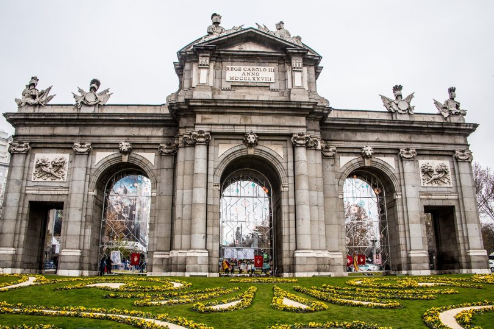
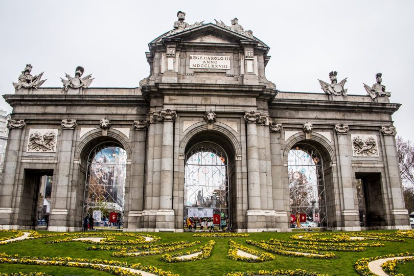
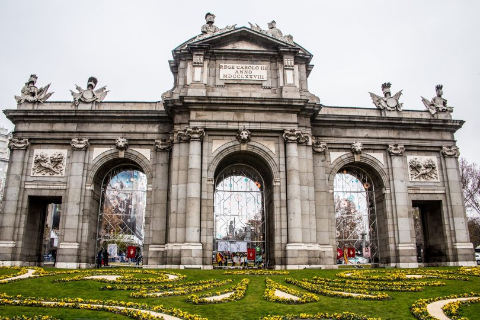

 
Japon, Espagne, Maroc
Barcelone Madrid Séville

-Barcelone est la ville la plus touristique Madrid est la capital de L'Espagne. Elle est un centre Séville est une ville d’Andalousie riche
d’espagne. Cette ville connait une archite- économique, culturel et touristique. Son charme est un en culture et en histoire. Elle a été conquise
cture hors du commun, elle a connu mélange de quartiers historiques et de grandes avenues par l’Empire Romain en 1er, puis elle a été
l’empire romain mais aussi l’empire musul- modernes. Une ville d'histoire, d'art, et de nature. sous domination musulmane, ce qui fait sa richesse.
man. Nous vous avons fait une selection Le vieux centre ville a une forte concentration de
de 3 villes que vous devrez absolument voir ! 1. Palacio Real de Madrid, un palais majestueux est l'un monuments historiques. Les lieux que nous vous conseillons
des plus grands d'Europe. Il compte 3 418 pièces et une de ne pas rater durant votre séjour:
1. On ne peut pas penser à Barcelone sans surface d'environ 135 000m²! Son arhitecture est impréss-
mentionner la Sagrada Familia. La construction ionnante, les meubles et les décorations sont aussi incr- 1. Cathédrale de Séville et la Giralda, une cathédrale
a débuté en 1882 et est encore en construction. oyable! Allez-y tôt le matin pour éviter le monde ! construite sur un ancien site musulman, rempli d'histoires.
Mais ce monument reste extraordinaire à voir ! Bref, une architecture hors du commun et la montée dans la Giralda
2. Museo Nacional del Prado, l'un des musées d'art les à faire pour accéder à une vue magnifiquesur la ville.
2. Le Parc Güell, un mélange de nature et plus réputés au monde. Même si vous n'êtes pas d'amateur
de modernité. Le parc est situé en hauteur, d'art, l'histoire et les oeuvres en valant la peine d'être 2. Real Alcázar de Séville, un palais royal au design mauresques.
ce qui donne une magnifique vue sur la ville ! observées. Encore une fois , la visiter vous fera découvrir son architecture
Si vous voulez faire une promenade, ou bien hors du commun.
vous détentre. 3. Parque del Retiro, ancien jardin royal aujourd'hui
ouvert au publique est un incontournable. Vous pouvez 3. Plaza de España et Parc de María Luisa, une place monmentale.
3. Barri Gotic, le quartier historique du centre marcher, faire un pique-nique et même faire du bateau ! Le contraste entre l'architecture spéctaculaire, et la détente est
de Barcelone. Ruelles étroites et bâtiments parfait pour une après midi!
anciens, l’ambiance de ce spot va faire fondre
les amoureux d’Histoire ! Vous pouvez visiter
les différentes boutiques, et faire une petite
collation, en plus de la balade.